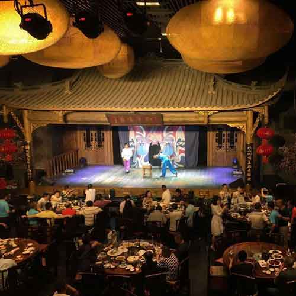

相关故事
-

-
成都锦里
都市里离浪漫最近的地方——锦里,体验时尚休闲魅力街区。
-
-
- 
-
顺兴老茶馆
吃川菜,品小吃,看川剧表演,来顺兴老茶馆可以一次搞定。
-
在这节课里我们会用手揉面，手工擀皮，怎么调茶饼馅以及揭开茶饼香味的大秘密。交给你们如何品尝糕点。当这一切告一段落我们就一起坐下来分享我们亲手做的糕点。别忘了告诉我你们喜欢的搭配!
厨房器具
我们做的饺子
茶，水
如果你是素食或者对某种食材过敏请提前告诉我
我的厨房位于上海的新地标凌空SOHO，这幢建筑是由建筑设计师，普利兹奖获得者扎哈.哈迪（ZahaHadid）设计的。这幢庞大的建筑和忙碌的上班族会让你领略上海工业区的美丽，如果你是摄影爱好者，别忘了带上你的相机，这里可是绝佳的拍摄地点！
1. 可乘坐地铁10号线再转乘地铁2号线至淞虹路下车
2. 176路公交车至协和路泉口路下车
老茶馆
往返交通
都市里离浪漫最近的地方——锦里,体验时尚休闲魅力街区。
吃川菜,品小吃,看川剧表演,来顺兴老茶馆可以一次搞定。
评论
2017.8.31 20:06
小笼包是中国的传统美食之一，这个体验非常棒